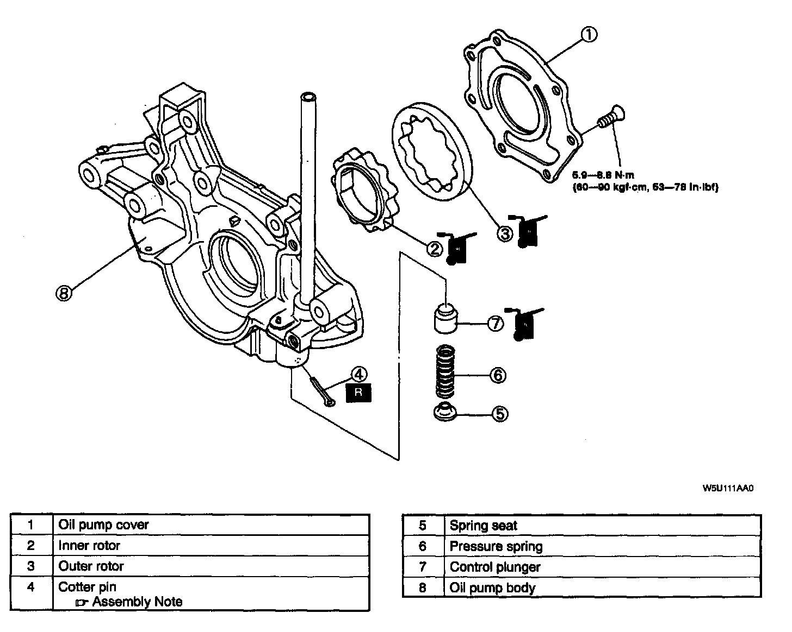
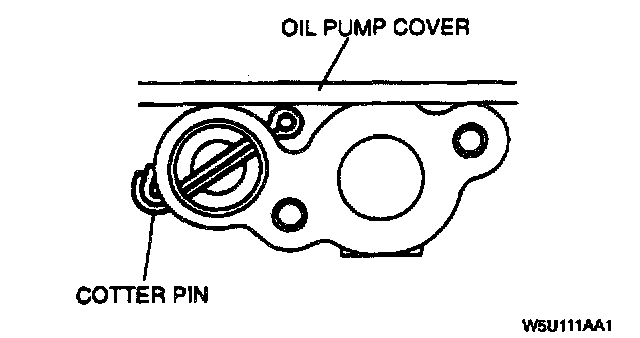
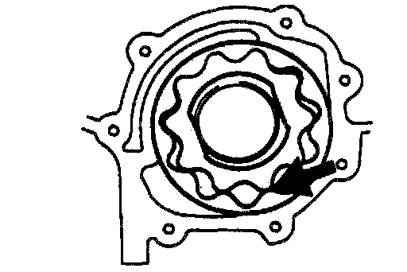
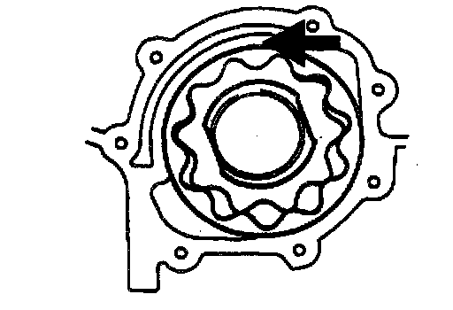
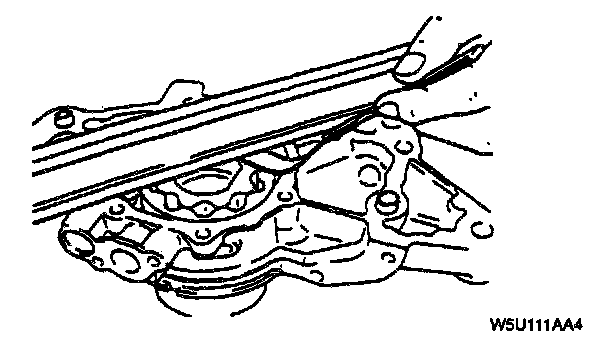

Oil Pump: Service and Repair
OIL PUMP DISASSEMBLY / ASSEMBLYWarning: Continuous exposure with USED engine oil has caused skin cancer In laboratory mice. Protect your skin by washing with soap and water Immediately after this work.

1. Disassemble in the order indicated in the table.
2. Assemble in the reverse order of disassembly.
Cotter Pin Assembly Note

^ Bend the cotter pin so that its tip does not project from the oil pump cover mounting surface.
OIL PUMP INSPECTION
Inner Rotor, Outer Rotor, and Oil Pump Body Inspection

^ Measure the following clearances. Replace the rotor or oil pump body as necessary.
Standard tooth tip clearance 0.02 - 0.18 mm (0.0008 - 0.0070 inch)
Maximum tooth tip clearance 0.20 mm (0.0079 inch)

Standard outer rotor-to-oil pump body clearance 0.090 - 0.176 mm (0.0036 - 0.0069 inch)
Maximum outer rotor-to-oil pump body clearance 0.22 mm (0.0087 inch)

Standard side clearance 0.03 - 0.11 mm (0.0012 - 0.0043 inch)
Maximum side clearance 0.14 mm (0.0055 inch)
Pressure Spring Inspection

^ Apply pressing force to the pressure spring and measure the spring height.
Standard height 35.42 mm (1.394 inch) [Pressing force: 62.8 - 68.6 N (6.4 - 7.0 kgf, 14.1 - 15.4 lbf)]